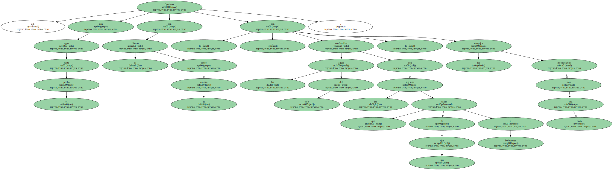
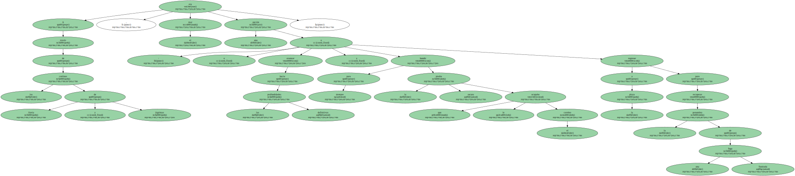
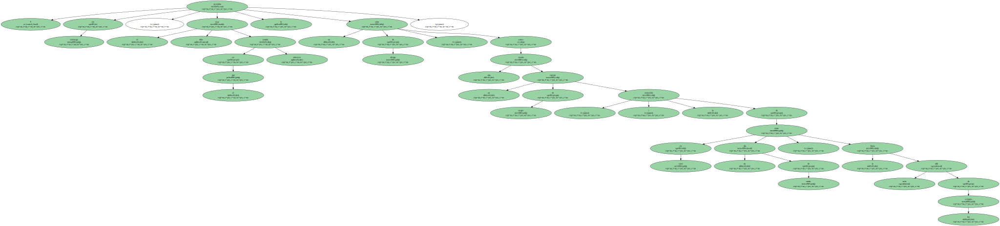
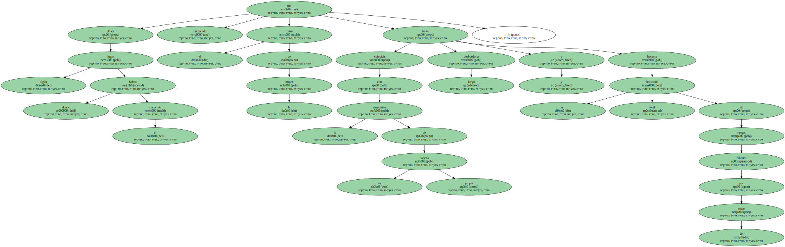
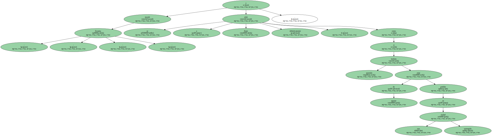
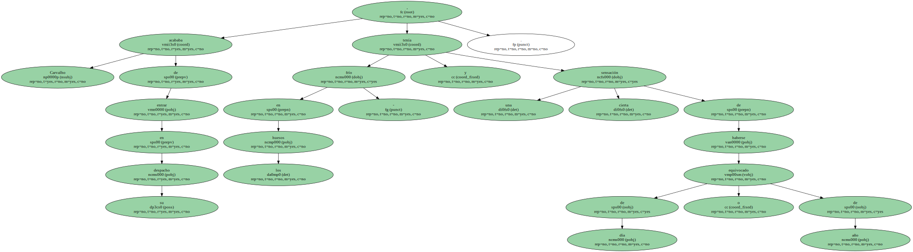
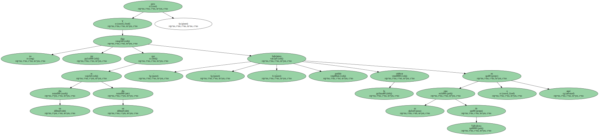
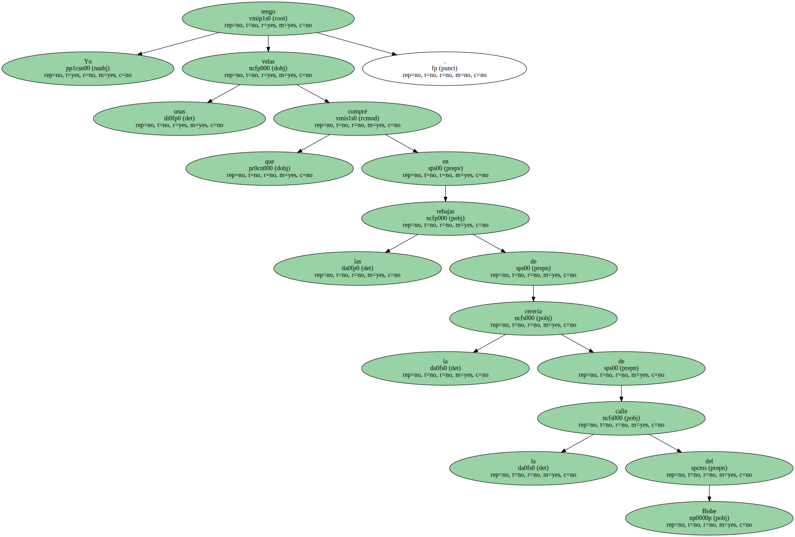
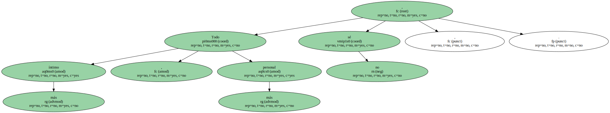

Quedarse allí con agua hasta el pecho , con el diluvio sobre la cabeza , confundidas las aguas del cielo con las lágrimas que salían de sus ojos a borbotones , con los congojos cada vez más incontrolables.
A través de las cortinas de lluvia y lágrimas , el mar era una opción : o avanzar hacia las definitivas profundidades y hundir para siempre la piedra oscura que le ocupaba el cerebro o regresar a la playa para recuperar la penumbra de una fuga frustrada.
Y sin embargo , el tibio mar en el que estaba inmerso le prestaba un calor de abrigo , como una manta , un cuerpo de mujer | la sensación de estar en casa un día de otoño , la lluvia más allá de los cristales.
Desde algún lugar donde habita el recuerdo fue creciendo el rostro de la mujer hasta coincidir con la dimensión de su propia cabeza y luego desbordarla y hacerse un horizonte total de rasgos diluidos por las aguas.
- - Encarna - - musitó y se echó a llorar definitivamente , como si hubiera asumido de repente estar perdido en una ciudad sumergida.
- - Si me hubiera dejado a mí , jefe , le habría salido todo mucho más barato.

Carvalho acababa de entrar en su despacho , tenía frío en los huesos - y una cierta sensación de haberse equivocado de día o de año.
La voz de Biscuter le parecía un paisaje sonoro sin interés y tardó en darse cuenta de que insistía.

- - Y no me diga que un día es un día , pero lo habríamos podido celebrar en su casa de Vallvidrera o aquí.
Yo tengo unas velas que compré en las rebajas de la cerería de la calle del Bisbe.
Todo más íntimo , más personal , no sé ,.
